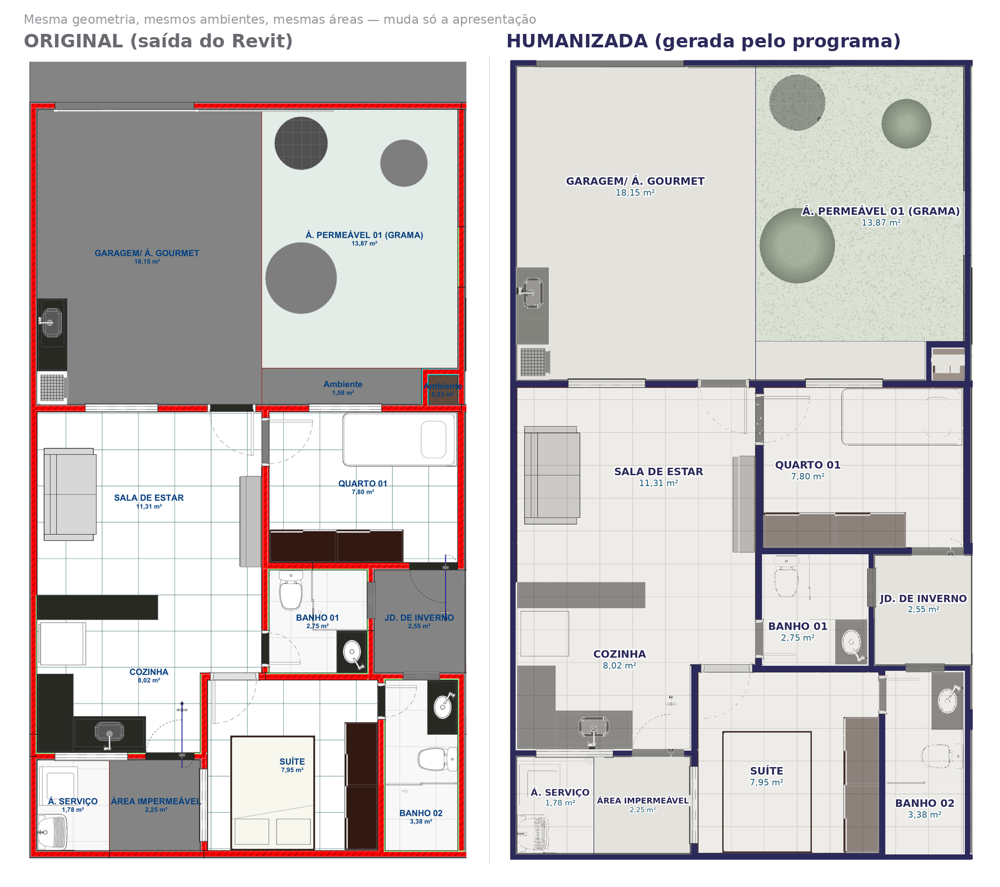
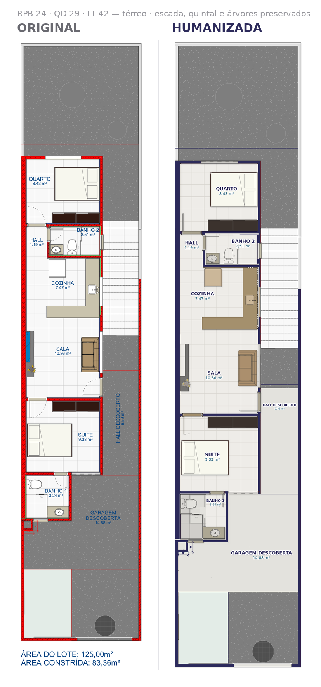

O que faz
Lê o PDF vetorial que sai do Revit, redesenha a planta com acabamento de apresentação e monta a prancha no timbrado da empresa, junto com a fachada 3D, as características da casa e o quadro de áreas.
Gerar uma prancha
Roda dentro do navegador: você solta os arquivos do Revit, confere a tabela de ambientes e baixa a prancha. Os arquivos não saem do seu computador e não passam por servidor nenhum.
Abrir o gerador →Botões do Revit (pyRevit)
Uma aba Morais dentro do Revit, com três botões. Eles exportam a
planta com cada ambiente pintado com uma cor própria e um
.json dizendo qual cor é qual — mais a fachada 3D com câmera,
sol e sombra padronizados.
Baixar a extensão → como instalar e usar
| botão | o que faz |
|---|---|
| 01 Planta Humanizada | duplica a planta ativa, pinta cada ambiente, exporta PDF + ficha .json |
| 02 Fachada 3D | perspectiva de venda: câmera na diagonal, sol de relevo, sombra de ambiente, enquadramento apertado |
| 03 Exportar Tudo | os dois seguidos, na mesma pasta — o botão do dia a dia |
Rodar no computador
Alternativa para quem tem Python instalado. Dentro da pasta app/:
pip install -r requirements.txt
python main.py --planta ../entrada/PLANTA.pdf --ficha ../entrada/PLANTA.json \
--fachada ../entrada/3D.pdf \
--titulo "CASA 1 E 2" --lote 90.00 --saida PRANCHA.pdfOpções
| opção | o que faz |
|---|---|
--ficha PLANTA.json | usa a ficha de cores do pyRevit: lê os ambientes em vez de deduzir |
--piso "AMBIENTE=concreto" | corrige o acabamento de um ambiente |
--nome "DE=PARA" | renomeia o ambiente na peça de venda |
--escala 100 | força a escala quando a detecção avisar que não confia |
--pagina 1 | processa a segunda página do PDF |
Exemplos

